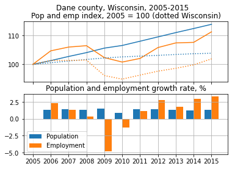
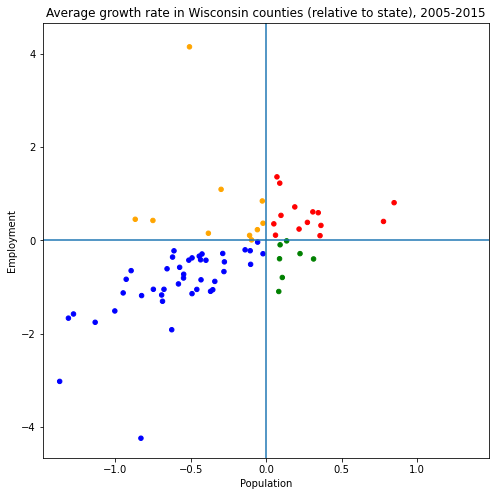

Analysis of population and employment dynamics
DF['by year'] = data_by_year()
DF['by year'].head()
| st | cty | year | pop | pop_gr | emp | emp_gr | |
|---|---|---|---|---|---|---|---|
| 0 | 00 | 000 | 1990 | 249470539 | NaN | 93983875.0 | 2.145 |
| 1 | 00 | 000 | 1991 | 252208537 | 1.097524 | 91781210.0 | -2.439 |
| 2 | 00 | 000 | 1992 | 255104027 | 1.148054 | 91752935.0 | 0.004 |
| 3 | 00 | 000 | 1993 | 257857622 | 1.079401 | 93252746.0 | 1.560 |
| 4 | 00 | 000 | 1994 | 260401091 | 0.986385 | 95712240.0 | 2.254 |
plot_growth('55', '025', 2005, 2015)

Compare different areas
Average growth rate of variable between years and is computed as .
d = compute_agr(2000, 2010)
d['c'] = color_from_agr_cat(d, 'abs')
d.head()
| st | cty | emp_agr_abs | pop_agr_abs | ref_emp_agr | ref_pop_agr | pop_agr_rel | emp_agr_rel | agr_cat_abs | agr_cat_rel | c | |
|---|---|---|---|---|---|---|---|---|---|---|---|
| 0 | 00 | 000 | -0.173731 | 0.838944 | -0.173731 | 0.838944 | 0.000000 | 0.000000 | pop+ emp- | pop+ emp+ | green |
| 1 | 01 | 000 | -0.497312 | 0.658386 | -0.173731 | 0.838944 | -0.180558 | -0.323581 | pop+ emp- | pop- emp- | green |
| 2 | 01 | 001 | 0.546082 | 2.006507 | -0.497312 | 0.658386 | 1.348121 | 1.043393 | pop+ emp+ | pop+ emp+ | red |
| 3 | 01 | 003 | 0.865040 | 2.381697 | -0.497312 | 0.658386 | 1.723312 | 1.362352 | pop+ emp+ | pop+ emp+ | red |
| 4 | 01 | 005 | -3.554504 | -0.543406 | -0.497312 | 0.658386 | -1.201792 | -3.057192 | pop- emp- | pop- emp- | blue |
plot_agr('55', 2005, 2015, 'rel')
